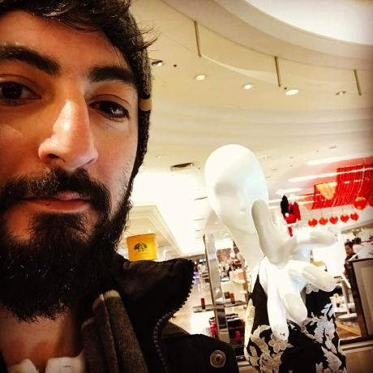

About Me

Hello! My name is Kouros Mousavi and I am currently enrolled in the George Washington University Code Bootcamp. Previously to enrolling in this class, I was working in IT and considered myself a generalist. I didn't seem to have any upward mobility. My reasons for taking this course is to set the foundation of providing for a career path that I can grow with. I look forward to mastering the craft of coding and becoming more competent as a web developer through this course and far beyond.